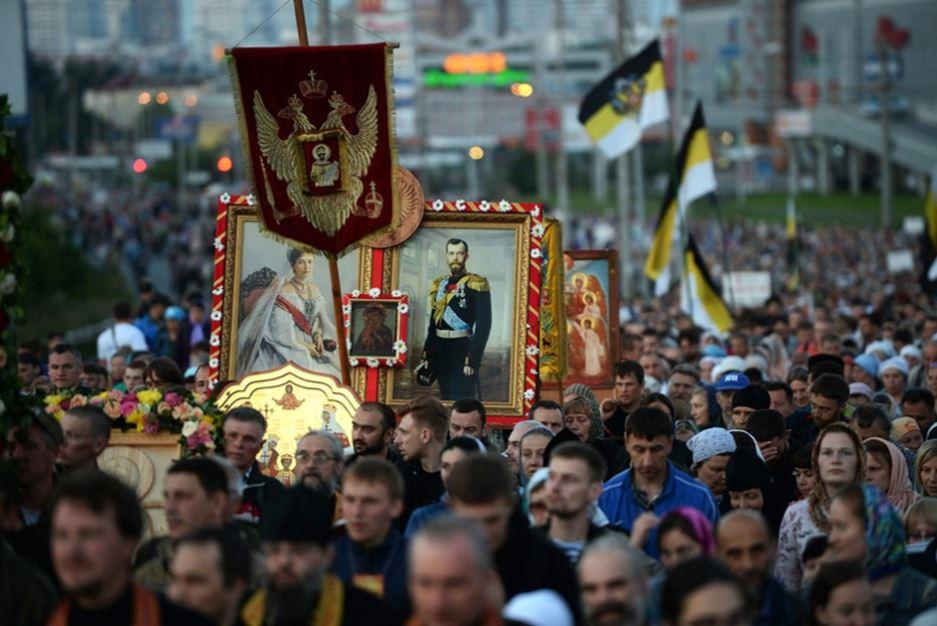
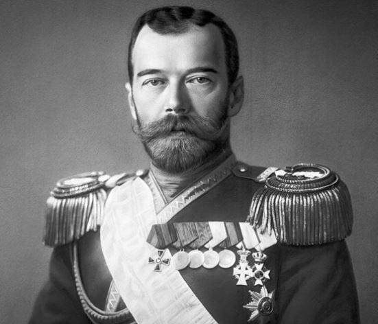
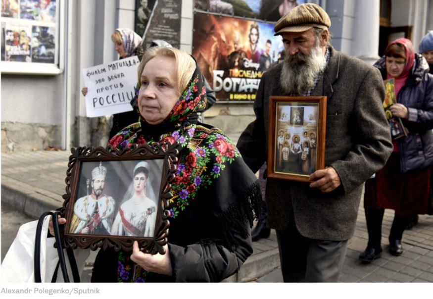
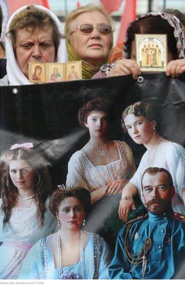

L’information a fait les titres de tous les principaux journaux russes. Pour la première fois de son histoire post-soviétique, la Douma (parlement) a décidé d’honorer la mémoire des Romanov par une minute de silence. Exécutés dans la nuit du 16 au 17 juillet 1918, le Tsar Nicolas II et sa famille font toujours l’objet de fantasmes en tout genre. Sanctifiés en 2000 par l’église orthodoxe, deux ans après que leurs restes aient été inhumés dans la forteresse Pierre et Paul, ce sont aujourd’hui des centaines de milliers de russes, qui chaque année, participent à la longue procession qui converge en direction d’Ekaterinbourg, devenue un lieu de culte pour les partisans et nostalgiques de la monarchie.
À l’exception du Parti communiste de la Fédération de Russie qui a souhaité boycotter cette cérémonie, l’hommage aura été unanime et les applaudissements nourris lors de cette session plénière historique. Filmé pour la postérité, l’événement a même été mis en ligne sur la page officielle du Facebook russe (Vkontakte) de la Douma afin que tous puissent vivre l’intensité du moment. C’est au leader du parti libéral-démocrate de Russie, Vladimir Jirinovski, que l’on doit cette initiative. Le député, qui représente officiellement la seconde force d’opposition au régime, est un partisan avoué du retour de la monarchie. Déjà l’année dernière, il avait tenté de faire adopter le « Dieu sauve le tsar » comme hymne officiel. En vain.
« Le fait que toutes les factions politiques de la Douma d'État aient honoré la mémoire du Tsar et de sa famille constitue un bon point de départ pour parler de l'avenir » a fait remarquer dans son discours le président de la Douma, Vyacheslav Volodin, Avant d’ajouter que cet hommage, lié au souvenir de ceux tombés durant la guerre civile (1917-1922), permettait aux russes « autant de se réconcilier avec (leur) histoire que de comprendre que ce genre d'événements ne devaient jamais plus se répéter».
« Beaucoup se définissent malheureusement toujours comme des rouges ou des blancs, se disputant avec une certaine rage avec leurs adversaires. Aujourd’hui, le parlement russe a montré que nous devions respecter notre passé et aller de l'avant - un avenir où il ne devrait y avoir aucune place pour une nouvelle guerre civile » a renchéri alors le premier vice-président du parlement, Andrei Isaev qui a pris la parole à la suite de Vyacheslav Volodin.
Selon un récent sondage VTsIOM, 57 % des russes affirment que l’assassinat organisé par les bolcheviques sur les membres de la famille impériale devrait être regardé comme « l’acte le plus horrible de l’histoire russe ». Un avis largement partagé par 67% des 18-24 ans qui ont redécouvert une histoire tronquée par soixante-dix ans de communisme et qui se la réapproprie doucement.
L’ombre du Tsar Nicolas II plane encore sur la sainte Russie qui n’en finit pas de faire son mea culpa et de réhabiliter les membres défunts de la maison impériale. De nombreuses statues ont fait leur apparition dans toute la Russie, parfois inaugurées par le président Vladimir Poutine lui-même qui cultive avec le même égard une nostalgie de l’ère impériale ainsi que celle du stalinisme à travers une seule idée, celle de la Grande Russie éternelle.
Il cajole son électorat monarchiste bien que la restauration de la monarchie « ne soit pas sur son agenda » avait-il tenu à préciser au producteur Oliver Stone venu l’interviewer en 2017. Une année coïncidant avec le centenaire de cette révolution qui avait provoqué la chute d’une dynastie tricentenaire et amené les bolcheviques au pouvoir.
Pour autant les russes souhaitent –ils vraiment le retour d’un Tsar alors que l’après Poutine se dessine, un régime presque usé par presque deux décennies de pouvoir, avec des générations entières de jeunes russes qui n’ont connu que cet ancien officier du KGB comme président ?
Un quart d’entre-deux (28%) se disent prêt à soutenir le retour d’un empereur à la tête de l’état, bien que divisés sur la forme que prendrait le retour de cette monarchie comme le nom du candidat.
D’ailleurs, certains n’ont pas hésité à proposer le nom du président comme probable Tsar et s’activent en ce sens. L’idée séduit ces mêmes jeunes qui ont été très enthousiastes à soutenir le président russe Un « système de gouvernement désormais envisageable » avait expliqué au magazine Le Point, le sociologue Stépan Lvov qui confirme que 33 % des 18-24 et 35 % des 25-34 ans adhèrent à l’idée monarchique.
Quant aux Romanov, leur respect à l’égard du pouvoir n’a d’égal que leur amour à la mère patrie. « La maison impériale et la majorité des personnes qui nous sont fidèles, pensent que Vladimir Poutine défend avec succès les intérêts de son pays » a déclaré le grand-duc héritier Georges Romanov, issu de la branche des Kirillovitch.
Et pour certains députés, la passion envers la famille impériale est source de dévotion mystique comme en témoigne la députée Natalia Poklonskia n’a pas manqué de rajouter sa voix à cet hommage : « Il y a plus de cent ans, dans la nuit du 16 au 17 juillet, un crime terrible a été commis (…) Je suis fier de notre dernier empereur et il sera toujours pour moi un exemple de service à la patrie (…). Notre souverain Nicolas II et sa famille sont l'âme de la Russie et resteront toujours dans le cœur des russes » peut-on lire sur les réseaux sociaux de la part de celle qui est considérée comme une pasionaria et qui est également apparue dans une vidéo aux côtés d’acteurs russes, déclamant son amour au monarque défunt et sa famille à travers un très long poème émouvant. Il en va de même chez les oligarques.
À la tête d’une école qui prépare les futurs fonctionnaires impériaux de demain, l’homme d’affaires Konstantin Malofeev est à la tête du mouvement monarchiste « Aigle Bicéphale » et celui qui « murmure à l’oreille de Vladimir Poutine ». Il a été un des coordonnateurs de la procession de cette année vers Ekaterinbourg, en tête d’un cortège de 200 000 personnes.
« De nombreux députés sont favorables à faire du 17 juillet, un jour férié consacré à la mémoire de la famille impériale et de tous ceux qui ont été les victimes innocentes de la guerre civile en Russie » a déclaré Andrei Isaev qui a conclu, que cette journée, « était un pas très important sur la voie de la réconciliation nationale ».
Partager cette page